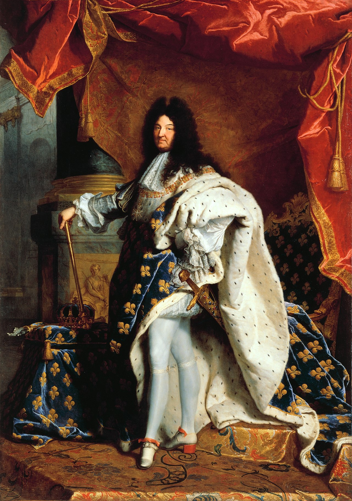
프랑스 궁정 바로크
로코코는 바로크와 완전히 단절된 새로운 미술이라기보다, 바로크가 발전시킨 곡선, 운동감, 장식성, 감정적 효과를 더 가볍고 사적이며 감각적인 방향으로 바꾼 18세기의 양식이다. 특히 프랑스에서 루이 14세 시대의 공식적이고 장엄한 궁정문화가 약화된 뒤, 귀족의 저택과 살롱 같은 보다 친밀한 공간에서 사랑, 유희, 우아한 사교, 목가적 환상, 감각적 즐거움이 중요한 주제가 되었다.
바로크의 핵심에는 권력, 종교, 장엄함, 극적 감정, 거대한 공간이 있었다. 로코코는 그 시각언어를 완전히 버리지 않으면서 중심을 공적 세계에서 사적 세계로, 장엄함에서 우아함으로, 영웅적 사건에서 개인적 즐거움으로 이동시켰다.
거대한 공적 공간보다 귀족 저택의 친밀한 실내와 정원이 중요해진다.
전쟁·순교·왕권보다 사랑, 사교, 음악, 놀이와 목가적 환상이 늘어난다.
경외감과 비극보다 매혹, 유머, 유혹, 우아한 감각을 강조한다.
연한 청색, 분홍, 크림색, 황금빛 같은 밝고 섬세한 색조가 두드러진다.
비대칭 곡선과 소용돌이 장식이 시선을 가볍게 움직이게 한다.

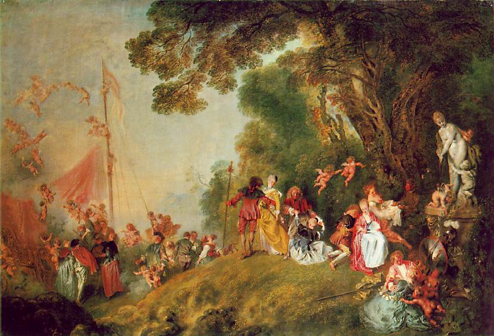
| 관찰 항목 | 바로크 | 로코코 |
|---|---|---|
| 주요 기능 | 왕권·교회·국가의 권위와 종교적 감동 | 귀족의 사교, 개인적 취향, 장식과 즐거움 |
| 주제 | 성서, 순교, 역사, 영웅, 왕권 | 연애, 유희, 목가, 신화적 사랑, 일상의 즐거움 |
| 공간감 | 크고 깊으며 극적 | 친밀하고 가볍고 장식적 |
| 구도 | 강한 대각선과 극적 집중 | 비대칭 곡선, 느슨하고 리듬감 있는 배열 |
| 빛 | 극적인 명암과 집중 조명 | 부드럽고 산란된 빛 |
| 색 | 강한 명암과 깊은 색조 | 분홍·하늘색·크림·금빛 등 밝고 섬세한 색조 |
| 감정 | 경외, 비극, 영웅적 감동 | 매혹, 유혹, 즐거움, 우아함, 때로는 덧없음 |
| 관람자 경험 | 압도되고 감동한다 | 매혹되고 즐긴다 |
로코코도 하나의 엄격한 학파라기보다 여러 지역과 장르에서 나타난 공통된 미적 경향이다. 그림을 이해할 때는 다음 세 방향으로 나누어 보면 효과적이다.
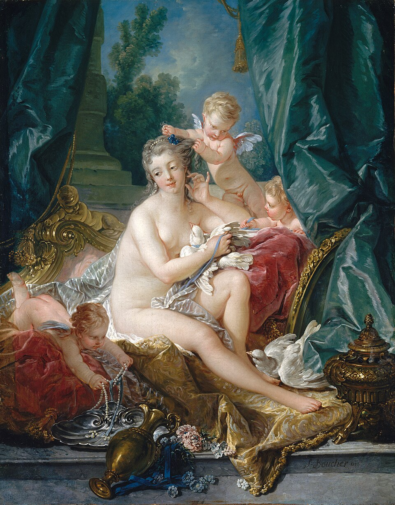
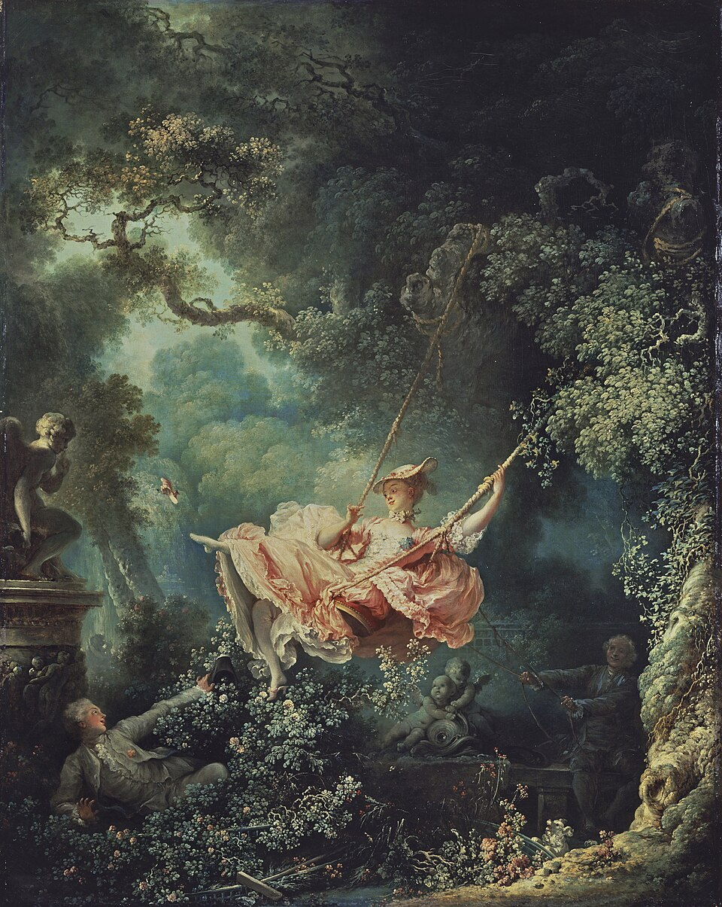
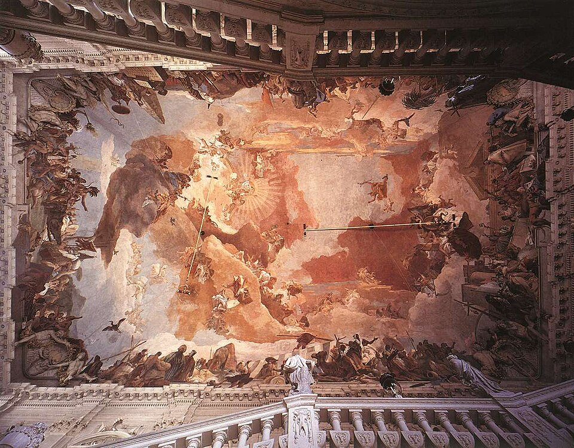
| 비교 항목 | 바로크 | 로코코 |
|---|---|---|
| 대표 이미지 | 리고 《루이 14세의 초상》 / 카라바조·루벤스의 극적 회화 | 와토 《키테라 섬으로의 순례》 / 프라고나르 《그네》 |
| 누구를 위한 미술인가 | 왕실·교회·국가·대중 | 귀족·상류층·개인적 후원자와 사적 공간 |
| 주요 감정 | 경외·감동·비극·영웅성 | 즐거움·매혹·우아함·유혹 |
| 인간 | 행동하는 영웅·성인·군주 | 사랑하고 놀고 사교하는 개인 |
| 구도 | 강한 대각선과 극적 집중 | 비대칭 곡선과 유동적 리듬 |
| 색채 | 깊고 강하며 명암대비가 큼 | 밝고 가벼운 파스텔 계열 |
| 공간 | 기념비적·공적 | 친밀하거나 환상적·장식적 |
| 한 문장 | “나를 압도한다.” | “나를 매혹한다.” |
18세기 후반이 되면 로코코의 귀족적·감각적·장식적 세계는 계몽주의적 도덕관, 고대 유적에 대한 새로운 관심, 시민적 덕목과 엄격한 질서를 중시하는 분위기 속에서 지나치게 가볍고 사치스러운 것으로 비판받기 시작한다. 이에 대한 강한 반작용이 신고전주의다.
| 로코코 | → | 신고전주의 |
|---|---|---|
| 곡선과 비대칭 | → | 직선과 명확한 구조 |
| 사랑과 유희 | → | 의무와 시민적 덕목 |
| 감각적 색채 | → | 절제된 색채와 선명한 윤곽 |
| 귀족적 사적 세계 | → | 고대 공화국·역사·공적 가치 |
| 즐거움 | → | 도덕적 엄숙성 |
로코코는 가벼움, 비대칭 곡선, 우아함, 장식성, 감각적 즐거움을 공유했지만 지역별로 회화·건축·종교장식의 비중이 달랐다.
| 국가·지역 | 특징 | 대표 인물 |
|---|---|---|
| 프랑스 — 프랑스 로코코 | 귀족 살롱과 저택을 중심으로 사랑·사교·페트 갈랑트·신화적 에로티시즘이 발달했다. | 와토, 부셰, 프라고나르, 비제 르 브룅 |
| 독일·오스트리아 — 남독일·오스트리아 로코코 | 프랑스의 사적 살롱문화보다 교회·수도원·궁전 내부의 흰색·금색 장식, 빛, 곡선이 결합한 화려한 건축적 로코코가 특히 강했다. | 치머만 형제, 노이만, 아삼 형제 |
| 이탈리아 — 베네치아 로코코 | 베네치아를 중심으로 밝고 가벼운 천장화, 도시 풍경, 축제와 궁정문화가 발전했다. | 티에폴로, 카날레토 |
| 영국 — 영국 로코코 | 프랑스식 로코코 회화가 그대로 정착했다기보다 가구·실내장식·은세공 등 장식예술에서 선택적으로 수용되었고, 회화는 초상과 풍속화가 독자적으로 발전했다. | 토머스 게인즈버러, 윌리엄 호가스 |
로코코는 바로크의 장대한 권위가 사라진 뒤, 귀족 살롱과 사적 실내, 장식예술, 감각적 대화 속에서 발전한 18세기 양식이다. 가볍고 밝아 보이지만, 실제로는 절대왕정의 공식 이미지에서 사적인 취향과 소비문화로 중심이 이동했다는 사회적 변화를 담고 있다.
국가 전개 표의 화가를 앞부분의 도판 여부와 관계없이 모두 모았고, 로코코의 주변부와 확장 영역도 함께 배치했다.
우아한 야외 사교와 덧없는 사랑의 감정을 통해 페트 갈랑트의 출발점을 만든다.
신화와 장식성을 결합한 프랑스 살롱 로코코의 대표작이다.

빠른 붓질과 은밀한 연애의 서사가 로코코의 유희성을 극대화한다.
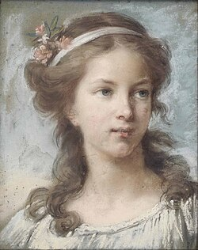
후기 로코코의 우아한 초상 양식을 신고전주의 시기까지 이어 간 프랑스의 대표적 여성 화가다.
밝은 색채와 솟구치는 원근법으로 베네치아 천장화의 환영을 만든다.
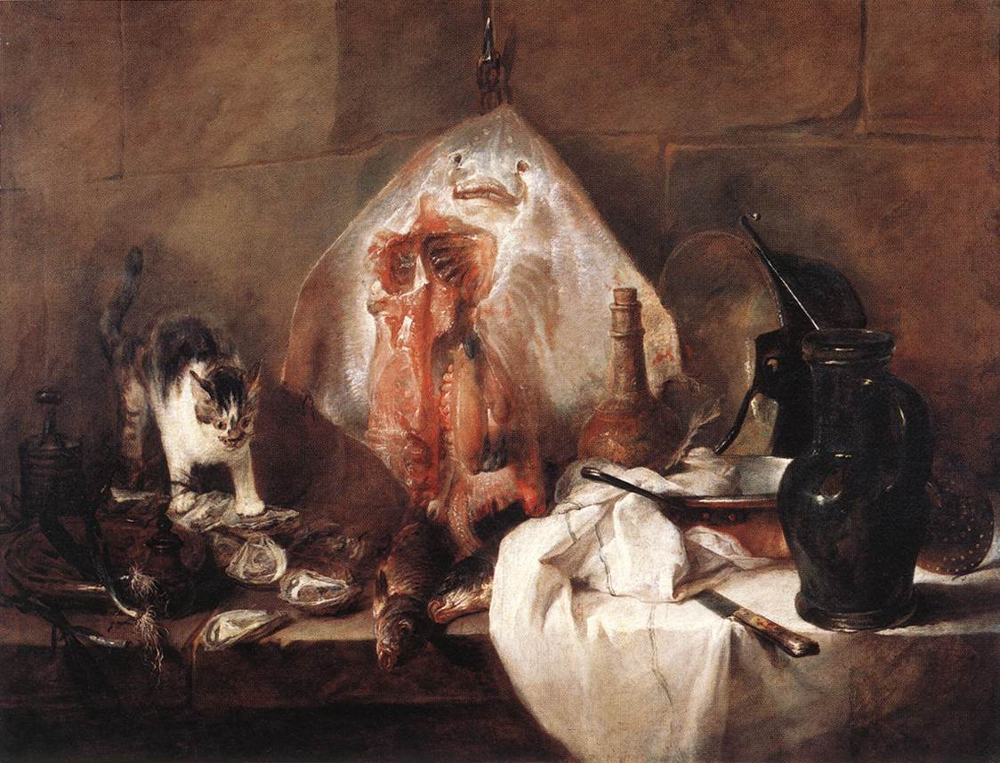
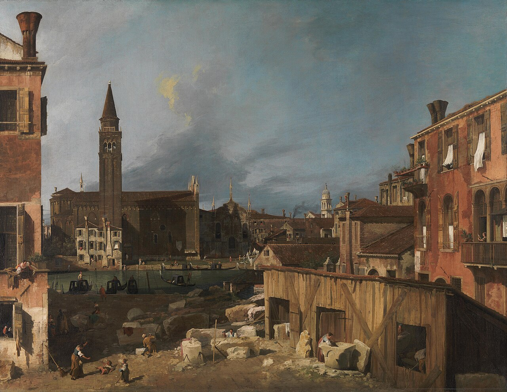
축제의 베네치아가 아니라 노동과 도시의 틈새를 정밀하게 보여준다. 그럼에도 맑은 빛, 건축적 질서, 여행자의 시선은 베네치아 로코코가 도시 풍경으로 확장된 방식을 드러낸다.
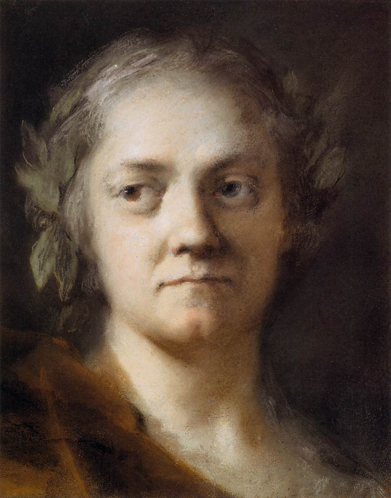
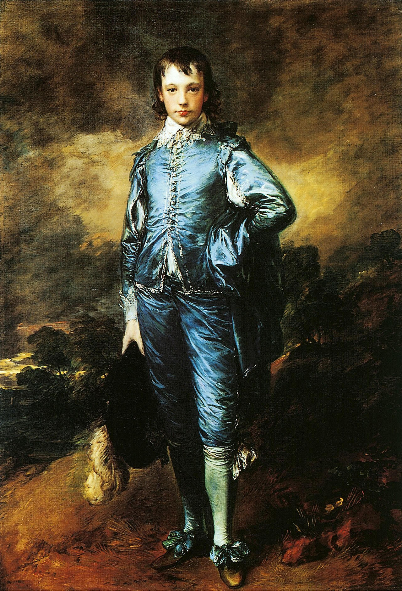
영국 초상화는 로코코의 우아한 옷감과 색채를 받아들이면서도 신분, 취향, 자연 배경을 결합했다. 푸른 의상과 느슨한 붓질은 사교적 세련미와 회화적 생동감을 동시에 만든다.
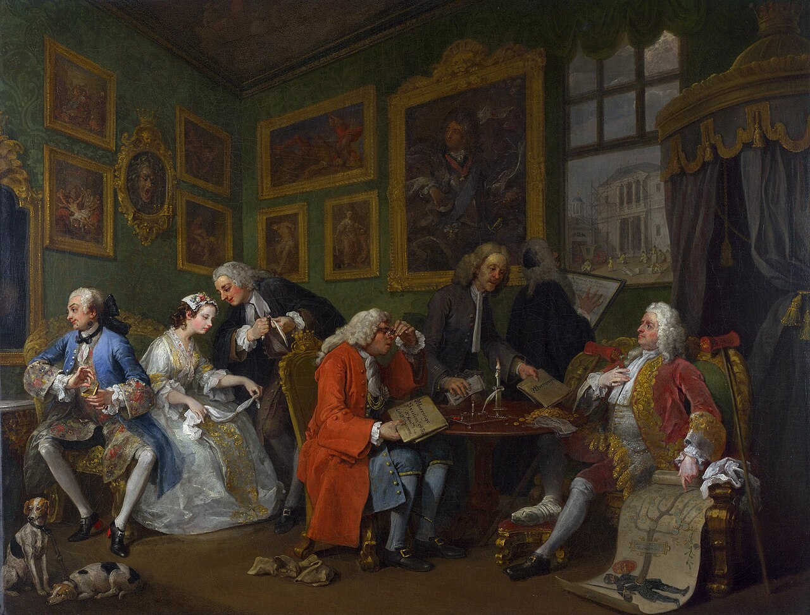
로코코의 사교적 실내와 유행 복식이 등장하지만, 화면은 귀족의 허영과 결혼 시장을 풍자하는 이야기로 구성된다. 영국은 프랑스식 우아함을 받아들이면서도 도덕적 풍속화로 비판했다.